Keep the files your analysis reads in _raw_data/ and
save the results it produces in _output/. With those names,
you can run your first build without writing a configuration file. This
example calculates a mean, archives the input and result on GitHub, and
reproduces the result in a fresh copy of the project.
Start with a GitHub project
Clone your GitHub repository (download a working copy with Git) and open its folder in R or RStudio. Use a repository where you can push commits and create releases. For a brand-new repository, add a README on GitHub before you clone it so the release has a commit to attach to. The input files you archive will be available to people who can read that repository.
Install projr and its GitHub tools once in R.
install.packages(c("remotes", "gh", "httr"))
remotes::install_github("SATVILab/projr@*release")If this is your first time publishing a release from R, create a
fine-grained GitHub token for this repository with read and write access
to Contents. Run gitcreds::gitcreds_set()
and paste the token when prompted. GitHub
release permissions
Give the analysis an input
Run these lines in the project folder, or put one of your own CSV
files in _raw_data/ and adapt the script below to its
column names.
dir.create("_raw_data", showWarnings = FALSE)
write.csv(data.frame(value = c(2, 4, 6)), "_raw_data/measurements.csv",
row.names = FALSE)Save the following code as analysis.R in the project
folder.
measurements <- read.csv("_raw_data/measurements.csv")
result <- mean(measurements$value)
writeLines(as.character(result), projr::projr_path_get("output", "mean.txt"))On a published build that last line writes
_output/mean.txt. The path helper also creates the folder
and sends preview builds to a separate location. An existing script that
creates and writes directly to _output/ can keep doing so
for production builds. Keep original inputs in the input folder because
a build can clear previous results.
Build and archive it
Run this in the R console, from the project folder. On the first build, projr names the checkout’s full path and asks whether it may run the project’s scripts and hooks, write the configured files, and carry out requested Git or archive operations. Answer yes to approve those steps together. Later interactive builds in the same checkout reuse that approval.
library(projr)
projr_build(archive_github = TRUE)
readLines("_output/mean.txt")
# [1] "4"If prompted, enter a short description of what changed. The first
build writes _projr.yml with the folder names it uses. It
runs analysis.R, records a version, and uploads the
versioned files to the GitHub release named archive. Later
builds can share that release. The build log connects the version to the
code, and the archive records which files belong to it.
In an unattended job, pass the checkout’s root directory as
project. From that root the equivalent call is
projr_build(project = ".", archive_github = TRUE). This
selects the checkout for that build. The job also needs Git and GitHub
credentials for the push and upload.
Restore the inputs and run the analysis again

Clone the repository into a new folder. To reproduce the most recent build, open that copy as it is. For an older result, open a terminal in the new folder and list the saved builds.
Find the release version and description you want, such as
Build v0.1.0: Update measurements. Copy the short
identifier at the start of that line and run
git checkout --detach IDENTIFIER, replacing
IDENTIFIER with the one you copied. This loads the code for
that build.
Open that checkout in R to restore its inputs and run a local preview. The first interactive build asks for approval in this new checkout, too.
library(projr)
projr_restore()
projr_build_dev()
readLines(projr_path_get("output", "mean.txt", safe = TRUE))
# [1] "4"projr_restore() downloads the raw inputs for that build
and checks their contents against the recorded file hashes.
projr_build_dev() then runs the analysis locally so you can
inspect the result without publishing another version.
Keep existing folder names
If your analysis already uses data/original/ and
results/, you can keep both names. Before the first build,
save this as _projr.yml at the project root. If a build
already created the file, edit the corresponding paths in it.
The labels on the left tell projr what each folder is for. Paths in
the configuration start at the project root. The cache holds temporary
build files and docs collects rendered reports. When you
use a different input path in the example, update
read.csv() to match, or read from
projr_path_get("raw-data", "measurements.csv") so the
script uses the configured path directly.
Skip a script
If you keep an experimental script called scratch.R
beside analysis.R, add this setting to the existing
build section of _projr.yml.
With just this exclusion, projr still finds and runs
analysis.R and any other scripts or documents it would
normally select.
See the configuration reference for all the settings, the build guide for script execution, and the restore guide for other ways to recover files.